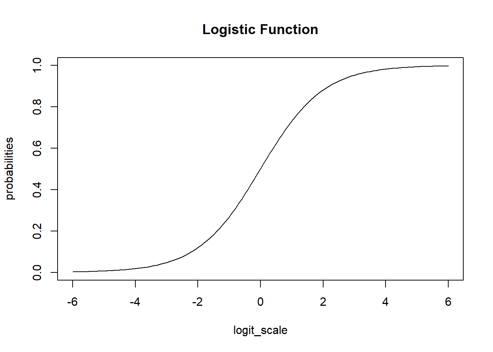

In this article, I will try to analyze percentage data as proportions, using quasibinomial and nonlinear fit to the log-logistic cumulative distribution function (CDF) curves.
For quasibinomial, an additional method is to add subject or individual or treatment group level random effect, that way additional noise is added to the model and can count for the spread of the data in addition to the binomial variance.
The data is generate in two ways, one is based on the logistic CDF with added noise, the other is just using binomial sampling. For the latter, the sample size information is excluded from the final dataset to mimic the percentage data characteristics. We can also generate over-dispersed binomial data following the steps described here or here
We are comparing the 3 methods with different data generation scheme.
Method A: simple quasi binomial
Method B: drc with normal spread around logistic CDF
Method C: quasi-binomial with random effect (MASS::glmmPQL(percentages/100~ conc,random=~1|conc,family="quasibinomial",data=data))
The conclusions are:
For the data generated based on logistic CDF, the standard DRC approach fit the data much better. In terms of EC50 estimation, …
For the data generated using binomial sampling, the
The data is generated using the cumulative function for logistic distribution. The code is modified based on this blog post. \[F(x;\mu,s) = \frac{1}{2} + \frac{1}{2} \tanh((x-\mu)/2s) = \frac{1}{1+e^{-(x-\mu)/s}}\]
where, \(\tanh(x) = \frac{\sinh(x)}{\cosh(x)} = \frac{e^x - e^{-x}}{e^x + e^{-x}}\), is the hyperbolic tangent function that maps real numbers to the range between -1 and 1.
Quantile of the CDF is then \(\mu+s\log(\frac{p}{1-p})\)
Random noises are added afterwards to the logistic distribution CDF.
We simulate \(n\) studies over concentration \(x\), denoted, \(X_{1}, X_{2}, …, X_{n}\) for \(k\) study \(X=(x_{1}, x_{2}, …, x_{k})\), where \(k\) is the number of different studies with different \(\mu\) and \(\sigma\).
Let’s say there are \(k=6\) study groups with the following parameter sets, \(\mu = \{9,2,3,5,7,5\}\) and \(s=\{2,2,4,3,4,2\}\)
generate_logit_cdf <-function(mu, s, sigma_y=0.1, x=seq(-5,20,0.1)) { x_ms <- (x-mu)/s y <-0.5+0.5*tanh(x_ms) y <-abs(y +rnorm(length(x), 0, sigma_y)) ix <-which(y>=1.0)if(length(ix)>=1) { y[ix] <-1.0 }return(y)}set.seed(424242)x <-seq(-5,15,0.025) mu_vec <-c(1,2,3,5,7,8) # 6 Studiess_vec <-c(2,2,4,3,4,2)# Synthetic Study IDstudies_df<-mapply(generate_logit_cdf, mu_vec, s_vec, MoreArgs =list(x=x))# Give them namescolnames(studies_df) <-c("Study1", "Study2", "Study3", "Study4", "Study5", "Study6")dim(studies_df)
simbinomdata <- purrr::map_dfr(lapply(1:length(x),function(i,n=10,size=100){ pi <- px[i] x1 <-rep(x[i],n) yi <-rbinom(n=n,size=size,prob=pi)/sizereturn(data.frame(x=x1,y=yi))}),as.list)ggplot(simbinomdata,aes(x=x,y=y))+geom_point()+scale_x_log10()+geom_line(data=data.frame(x=x,y=px),aes(x=x,y=px))
Call:
glm(formula = y ~ log(x), family = "quasibinomial", data = simbinomdata)
Coefficients:
Estimate Std. Error t value Pr(>|t|)
(Intercept) -0.03479 0.03518 -0.989 0.326
log(x) 0.98320 0.02022 48.618 <2e-16 ***
---
Signif. codes: 0 '***' 0.001 '**' 0.01 '*' 0.05 '.' 0.1 ' ' 1
(Dispersion parameter for quasibinomial family taken to be 0.008989206)
Null deviance: 63.0622 on 79 degrees of freedom
Residual deviance: 0.7379 on 78 degrees of freedom
AIC: NA
Number of Fisher Scoring iterations: 6
The quasi-binomial isn’t necessarily a particular distribution. The only assumption is that for a generalized linear model with binomial assumption of “p” (mean of the binomial should be \(np\)), the variance is \(\phi\) times the variance for that binomial = np(1-p). In case of missing sample size, then it is just \(\phi p(1-p)\)
Quasi-binomial is exactly the same as binomial for the coefficient / parameter estimates but not for the standard errors.
In terms of GLM, the dispersion for non-over-dispersed model like binomial and Poisson is 1. For quasi-families, it is estimated by the residual Chi-squared statistic divided by the residual degrees of freedom.
For estimation of EC50 or other ECx, other than inverse regression methods such as here and here
There is a {dose.p} function in the MASS package for calculating LCx or ECx together with the standard errors which can be used for the response confidence intervals. The vcov function can be used to extract the covariance function and used for estimation the CI of LCx or ECx. An alternative approach is to use bootstrap confidence intervals.
Since the goal of the data analysis is to measure the association between a set of regression parameters and the outcome, quasibinomial models can be useful with the variance assumption being relaxed. However, it is required to estimate the uncertainty associated with that relationship.
In fact, a limitation of these models is that they cannot yield accurate prediction intervals, the Pearson residuals cannot tell you much about how accurate the mean model is, and information criteria like the AIC or BIC cannot effectively compare these models to other types of models.
AIC(mod0)
[1] 19.40066
# [1] 19.40066try(AIC(mod1))
[1] NA
# > AIC(mod1)# Error in h(simpleError(msg, call)) :# error in evaluating the argument 'object' in selecting a method for function 'AIC': object 'mod1' not found
Generate data
logit_scale =seq(-6, 6, by =0.1)plot( logit_scale,plogis(logit_scale), ylab ='probabilities', type ='n',main="Logistic Function")lines( logit_scale,plogis(logit_scale))

plot( 1/(1+exp(-logit_scale)),plogis(logit_scale), ylab ='probabilities', type ='l',main="Linear Transformation of above")